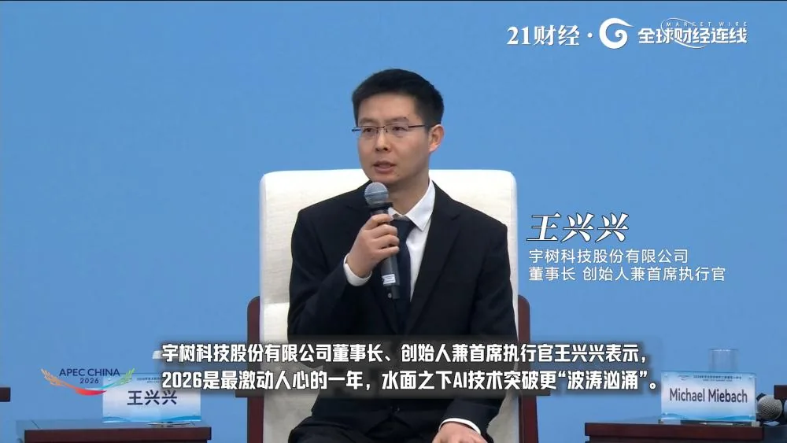

Nvidia ohne Jensen Huang: Welche chinesischen Robotikfirmen sind exponiert?
Die Rechenleistungsfrage hinter jedem Humanoiden auf dieser Straße.
Shenzhen zeigte dem asiatisch-pazifischen Raum eine Woche lang Roboter. Unitree lieferte den Gründer und die Performance. Die Roboter, die tatsächlich auf dem Gipfel arbeiteten — Kaffee kochten, Bier zapften, Gäste empfingen — kamen von anderen Unternehmen. Diese Aufteilung sagt mehr über den Stand des Geschäfts mit humanoiden Robotern als jede Keynote.

Shenzhen hatte den asiatisch-pazifischen Raum für eine Woche. Das 33. APEC-Wirtschaftsführertreffen fand am 18. und 19. November statt, der CEO Summit am 17. und 18. November im Qianhai International Convention Center, mit mehr als 2.000 Vertretern aus Wirtschaft und Politik und 115 Unternehmen der Fortune Global 500 auf der Liste. Die Stadt nutzte das Fenster auf ihre Art: nicht mit einer Ausstellung im Kongresszentrum, sondern mit Robotern auf Straßen, in Nachrichtenzentren, Parks und Läden, die besuchende Journalisten filmen durften.
Unitree war dabei, wie eine bekannte Marke bei einem großen lokalen Ereignis meist dabei ist — prominent, fotogen und ein Stück entfernt von der eigentlichen Arbeit. Der Gründer sprach. Die Roboter traten auf. Die Betriebsrollen gingen an andere.
Wang saß am 17. November in der Diskussion „Eine offene und inklusive KI-Innovationslandschaft aufbauen“, zusammen mit Baidu-Gründer Robin Li. Die Zhejiang Daily vermerkte wohlwollend, er sei der einzige Redner in weißen Sneakers gewesen. Inhaltlich war es interessanter als das Schuhwerk.
Sein zentrales Bild war vertikal. Was normale Menschen von KI und Robotik sehen, sagte er, sei der Teil über der Wasserlinie; darunter sei der Fortschritt „turbulenter“ und schneller als die öffentliche Wahrnehmung. Das ist der übliche Optimismus eines Gründers, aber er verband ihn mit zwei Einschränkungen, die in einer Keynote ungewöhnlich sind.
Die erste war technisch. Die Generalisierung der Modelle — eine Politik über Aufgaben und Umgebungen hinweg zu tragen — sei die größte Einschränkung, und er glaube, sie stehe kurz vor dem Durchbruch. Das deckt sich mit dem, was Unitree zuletzt zeigte: Im Oktober ließ das Unternehmen auf seiner Ökosystemkonferenz einen G1 von GPT-6 steuern, ohne Vortraining und ohne Planungspipeline; der Roboter malte und spülte einen Pinsel. Eindrucksvoll als Demo, noch kein Produkt.
Die zweite war industriell. Wenn die Nachfrage von Zehntausenden auf Millionen oder Zehnmillionen Einheiten springe, verlagere sich der Druck auf Fertigungszuverlässigkeit und Kundendienst. Dieser Satz verdient eine Unterstreichung. Es ist dieselbe Engstelle, über die ausländische Distributoren bei chinesischen Humanoiden klagen: Das Gerät kommt an, die Demo funktioniert, und in der neunten Woche fällt ein Gelenkmodul aus — ohne Techniker vor Ort und mit sechs Wochen Ersatzteilzyklus.
Außerdem räumte er etwas ein, was chinesische Manager auf internationaler Bühne selten sagen: China sei stark in der Fertigung, aber weiterhin schwach bei Frontier-KI-Modellen, Rechenleistung und Spitzenpersonal. Daraus folgte sein Plädoyer für Kooperation — den Markt vergrößern statt um Anteile kämpfen — und der Hinweis, dass mehr als ein Drittel der Partner auf Unitrees Ökosystemkonferenz im Oktober aus dem Ausland kam.
Das ist ein stimmiger Vortrag. Es ist aber ein Vortrag, gehalten vor potenziellen Partnern und Käufern, nicht vor einem Einkäufer.

Die Performance fand in Longgang statt, auf der Robotstraße rund um den weltweit ersten Robot-6S-Store — ein vierstöckiges Handels- und Erlebnisgebäude, das Roboter von Unitree, EngineAI, LimX Dynamics und anderen verkauft, verleast, wartet und individualisiert. Am 16. November kam die erste Gruppe der ausländischen APEC-Medien an. Ein deutscher Reporter sagte gegenüber Southern+, ihn habe weniger ein bestimmter Trick beeindruckt als die Gehfähigkeit — und dass es in Deutschland viel weniger Humanoide zu sehen gebe.
Was die Kameras bekamen, war eine Show. Eine koreanische Korrespondentin von Edaily sah am 13. November einen Unitree G1 bei einer Drunken-Boxing-Nummer — torkelnd, schwungvoll, dann mit einem Sprungtritt — während ein EngineAI T800 Boxbewegungen zeigte, darunter einen springenden Uppercut. Während der Medientour zeigten Unitree-Humanoide laut Jiemian Kung-Fu als Gruppe. Das Publikum stand dicht mit Handys.
Die Frequenz erklärt, warum der Laden das betreibt. Der Manager sagte Southern+, in der Woche vor dem Gipfel kämen täglich etwa 1.000 ausländische Besucher, mehr als 45 % aller Gäste, mit Reisegruppen aus Vietnam, Singapur und Malaysia. Ein Roboter, der für eine Handykamera eine Pose hält, ist dort ein Verkaufswerkzeug. Im selben Gebäude gibt es ein Robotrestaurant, einen Boxring und eine Drohnensteuerungs-Demo.
Eine Klarstellung gehört zum Protokoll: Die 151 humanoiden Roboter, die am 17. November eine Stunde lang in Longgang tanzten und einen Guinness-Weltrekord aufstellten, wurden von Future Era Robotics organisiert, dem Betreiber des 6S-Stores, nicht von Unitree. Der Rekord ist ein echtes Signal für Clusterkoordination und Hardwarestabilität in Shenzhen. Er ist kein Unitree-Meilenstein, und mehrere ausländische Beiträge haben beides vermischt.
Innerhalb des APEC-Apparats waren die Roboter mit repetitiver Arbeit ein anderes Aufgebot. Im Nachrichtenzentrum der Gipfelwoche machten sieben „Aibao“-Humanoide von Zhipingfang Kaffee, Eis und Saft — nach Angaben des Unternehmens 45 Kaffees, 30 Eis und 30 Säfte pro Stunde mit sieben Einheiten. Im Ruhebereich reichte „Yezai“ von Zibianliang Snacks und Wasser und nahm Abfall. UBTechs Walker C1 empfing Gäste im Qianhai „Bay Reception Hall“. „Xiaowei“ von Kuaiwei zapfte Bier und Milchtee im Qianhai-Steinpark, wo Meituan auch Lieferdrohnen und den Lieferroboter „Little Yellow Bee“ einsetzte.
Das sind pressemeldete Einsätze, keine geprüften Verträge, und mehrere sind Demonstrationsvereinbarungen im Servicegewand. Das Muster ist dennoch sichtbar: Die Unternehmen mit den Betriebsrollen verkauften Dienstleistungsarbeit, nicht athletische Fähigkeiten. Unitrees G1 ist eine Forschungs- und Performance-Plattform mit 127 cm Körpergröße und einem Preis, der ihn für Labore und Veranstalter attraktiv macht. Er wurde nie dafür gebaut, 2.000 Delegierten Kaffee zu servieren.
| Unternehmen | Auftritt in der APEC-Woche | Ort | Art |
|---|---|---|---|
| Unitree | Gründer-Panel; G1-Kung-Fu für Medien | CEO Summit (Qianhai); Robotstraße (Longgang) | Marke und Demo |
| Zhipingfang | Sieben „Aibao“-Humanoide für Kaffee, Eis, Saft | Nachrichtenzentrum | Service-Demo im Maßstab |
| Zibianliang | „Yezai“ reicht Snacks, Wasser, Abfall | Ruhebereich des Nachrichtenzentrums | Service-Demo |
| UBTech | Walker C1 empfängt Gäste | Qianhai Bay Reception Hall | Empfangs-Demo |
| Kuaiwei Intelligent | „Xiaowei“ zapft Bier und Milchtee | Qianhai-Steinpark | Retail-Demo |
| Future Era Robotics | Guinness-Rekord mit 151 Robotern | Robotstraße Longgang | Cluster-Performance |
Quellen: China News Service, Jiemian, CCTV, Southern+ und Unternehmensangaben, November 2026. „Art“ ist eine redaktionelle Einordnung, keine Vertragsbeschreibung.
Unitree ging am 19. August 2026 an die STAR-Market der Shanghai Stock Exchange, zu 150,80 RMB je Aktie, und sammelte rund 6,1 Mrd. RMB ein — bei einem Emissionspreis, der das 219-fache des Gewinns implizierte. Die Aktie eröffnete über 1.100 RMB, erreichte eine Marktkapitalisierung von mehr als 440 Mrd. RMB und fiel dann um über 60 %, bevor sie Ende Oktober wieder stieg. Am 17. November, dem Tag von Wangs Panel, schloss sie bei 639,94 RMB und bewertete das Unternehmen mit etwa 258 Mrd. RMB, laut Southern Metropolis Daily.
Der erste Quartalsbericht nach dem Börsengang vom 28. Oktober ist das nützlichere Dokument. Der Umsatz im dritten Quartal lag bei 665 Mio. RMB, plus 69,9 % im Jahresvergleich. Der den Aktionären zurechenbare Nettogewinn betrug 112,7 Mio. RMB, minus 17,4 %. Die Forschungsausgaben im Quartal lagen bei 127 Mio. RMB, plus 249,6 % und 19,1 % des Umsatzes. In den ersten neun Monaten erreichte der Umsatz 1,817 Mrd. RMB (+55,7 %) und der Nettogewinn 386,7 Mio. RMB (+270,5 %), doch der bereinigte Gewinn fiel um 18,8 % und der operierende Cashflow um 54,7 %.
Liest man diese Zeilen zusammen, ergibt sich das strategische Bild: Unitree gibt viel Geld aus, um einen Modellstapel aufzubauen, den es selbst noch nicht hat, während das Hardwaregeschäft schnell genug wächst, um das zu finanzieren. Die Geschichte des Unternehmens ist nicht mehr „günstiger Vierbeiner, tolle Videos“, sondern „Embodied-AI-Plattform mit Fertigung dahinter“. Das ist schwerer zu beweisen — und deshalb erklärt ein Gründer einen Vormittag lang auf dem APEC Modellgeneralisierung, statt einen Salto zu zeigen.
Für einen Distributor in Europa oder ein Labor in den USA ist die APEC-Woche ein nützliches Signal, aber kein entscheidendes. Sie zeigt, dass Unitree Markenzugang hat — Regierungen und Sender stellen die Maschinen gern ins Bild — und dass der Chef über die Probleme nach der Demo nachdenkt: Zuverlässigkeit, Service, Ersatzteile.
Sie zeigt nicht, ob diese Probleme gelöst sind. Ein G1 nach Deutschland braucht CE-Kennzeichnung, einen Servicepartner und einen Ersatzteilweg, der nicht bei jedem Fall über Shenzhen läuft. Die eigenen Zahlen sagen, dass die leichte Wachstumsphase endet: Das Umsatzwachstum verlangsamte sich von dreistelligen Raten Anfang 2026 auf etwa 70 % im dritten Quartal, und der bereinigte Gewinn schrumpft, während die Forschung steigt. Die nächste Etappe hängt davon ab, mehr Einheiten außerhalb Chinas zu besseren Margen zu verkaufen — mit einer Serviceschicht, die Geld kostet.
Das ist auch der Kontext für Wangs Satz über Millionen Einheiten. Es ist keine Prognose. Es ist die Feststellung, dass die Engstelle von der Bewegungssteuerung zur Logistik gewandert ist.
Es bewies, dass Shenzhen eine glaubwürdige Technologiewoche ausrichten kann. Ausländische Korrespondenten reisten mit Filmmaterial von Robotern ab, die gehen, kämpfen und tanzen, und mit einer Geschichte über eine Stadt, die sich um Hardware herum neu gebaut hat. Es bewies, dass chinesische Robotikfirmen eine stadtweite Show gemeinsam bestücken können, ohne dass ein Veranstalter alle in einen Stand zwingt.
Es bewies nicht, dass Unitree oder ein anderer Anbieter ein Servicegeschäft hat. Die Betriebsdemos waren klein, beaufsichtigt und kurzlebig. Der Rekord mit 151 Robotern war eine Koordinationsleistung, keine Flotte im Umsatzdienst. Und die Beschaffung des Gipfels, soweit es eine gab, ging an Kaffeemaschinen und Empfangstresen.
Das ist keine Kritik an Unitree. Es ist der Stand der Branche: fähige Hardware, bessernde Modelle und ein Geschäftsmodell, das überwiegend Maschinen an Menschen verkauft, die sie vorführen wollen. Wer den Sprung in Serviceverträge schafft, wird beim nächsten APEC aussehen wie die Firmen, die dieses Jahr den Kaffee ausgegeben haben.
Ja, aber nicht im Saal des Wirtschaftsführertreffens. Wang Xingxing sprach am 17. November beim CEO Summit. In derselben Woche zeigten G1-Humanoide auf der Robotstraße in Longgang Kung-Fu vor ausländischen Medien und Besuchern. Ein Serviceeinsatz im Gipfelzentrum wurde nicht gemeldet.
Nein. Future Era Robotics organisierte den Versuch am 17. November; Guinness World Records zertifizierte 151 humanoide Roboter, die innerhalb einer Stunde tanzten. Unitree-Maschinen waren im Viertel, der Rekord wird dem Unternehmen aber nicht zugeschrieben.
China habe einen Fertigungsvorteil, sei aber bei Frontier-KI-Modellen, Rechenleistung und Spitzenpersonal weiter schwach. Daraus folge, dass Kooperation statt Marktanteilskampf die rationale Strategie sei — mehr als ein Drittel der Ökosystempartner seien inzwischen im Ausland.
Nicht direkt. APEC ist ein politischer und wirtschaftlicher Gipfel, keine Beschaffungsmesse. Kurzfristig zählen Exportumsatz, Zertifizierung und Servicekapazität — Dinge, die in Berichten und Kanalprüfungen stehen, nicht auf einer Bühne.
Die Rechenleistungsfrage hinter jedem Humanoiden auf dieser Straße.
Einsatzumsatz gegen Plattformverkauf — die Spaltung, die die APEC-Woche sichtbar machte.
Zwei Humanoide, zwei Vorstellungen davon, wofür ein Roboter da ist.
Wohin das Geld fließt, bevor ein Roboter eine Bühne erreicht.
Produkte, Finanzierung, Exporte und die Zahlen nach dem Börsengang.
Die Gelenkmodule hinter der Behauptung von 90 % Lokalisierung.
Unternehmensprofile, Produktseiten und Zulieferer-Analysen für Chinas Robotik-Ökosystem.